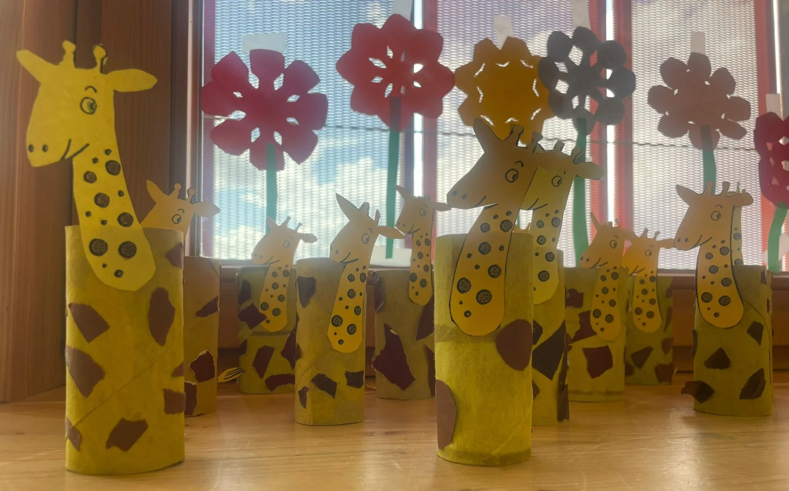
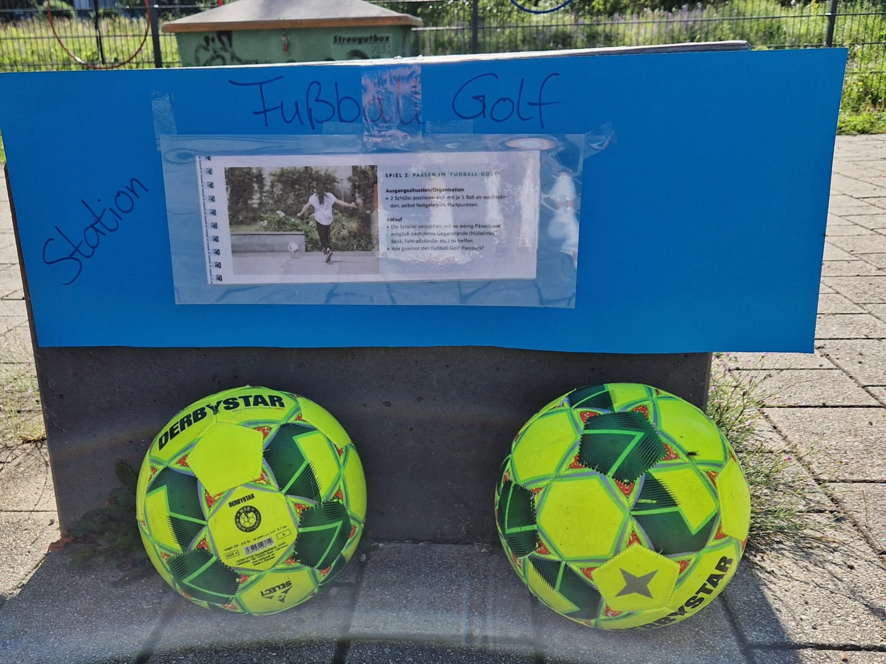
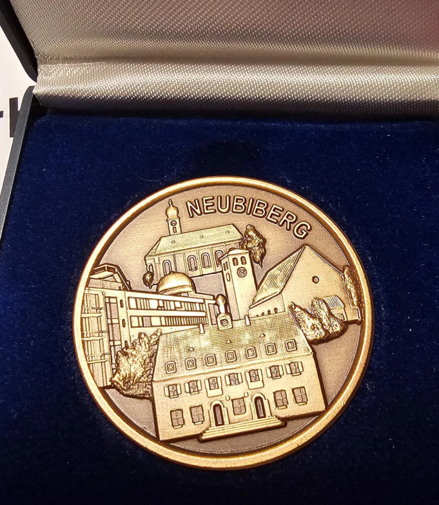
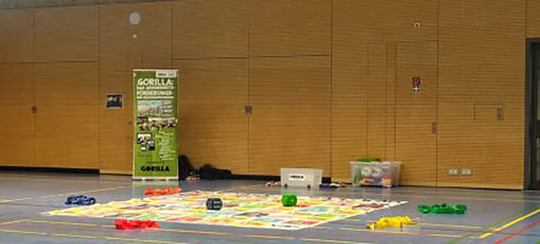
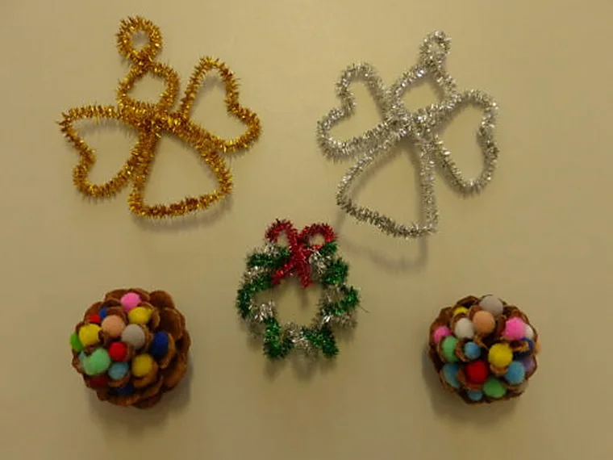
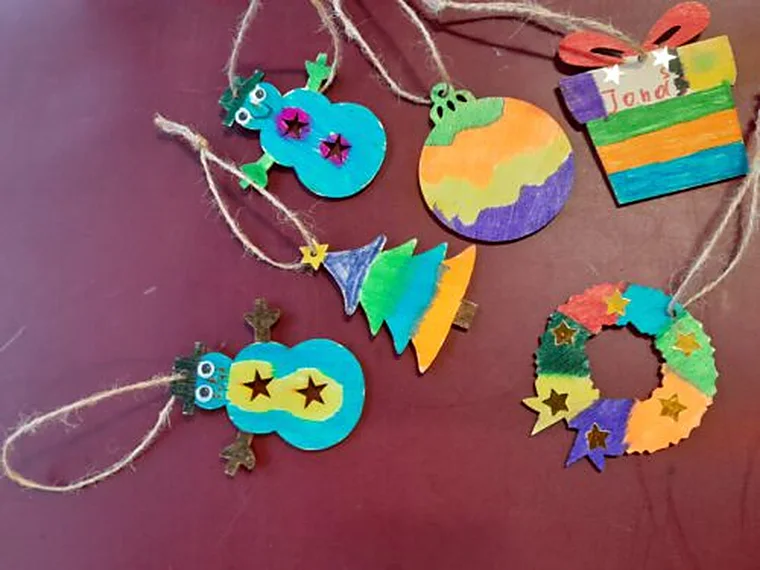

Einblick ins Schuljahr
Lesen im ganzen Schulhaus
Lesungen in der Aula, ein Bücherflohmarkt, Lesekisten und ein Besuch in der Gemeindebücherei gehörten zur Projektwoche.
Zum Beitrag im JahresrückblickArchiv
Ein Rückblick auf die Leseprojektwoche, das Fußballturnier und weitere gemeinsame Erlebnisse.

Einblick ins Schuljahr
Lesungen in der Aula, ein Bücherflohmarkt, Lesekisten und ein Besuch in der Gemeindebücherei gehörten zur Projektwoche.
Zum Beitrag im JahresrückblickJuni 2024
Lesungen in der Aula, ein Bücherflohmarkt, Lesekisten und ein Besuch in der Gemeindebücherei gehörten zur Projektwoche.
Bei der Büchereiausleihe konnten die Kinder Wünsche für neue Bücher abgeben und bei einem Quiz mitmachen. In den Klassen entstanden Leserollen und Lesekisten.
Juni 2024
Beim Turnier auf dem Schulgelände machten alle Klassen mit.

Februar 2024
Der Jahresrückblick hält das gemeinsame Faschingsfest im Schulhaus fest.
Januar 2024
Beim Neujahrsempfang der Gemeinde wurde unsere Schule für das Sportprofil geehrt.

Viele Bücher fanden bei der Tauschbörse neue Leserinnen und Leser.
Mehrere Sportaktionen ergänzten den Unterricht in diesem Schuljahr.

Dezember 2023
In der Adventszeit halfen Eltern beim Basteln. Das Winterfeuer organisierte der Elternbeirat.


November 2023
Die Neubiberger Bücherei und Herr Körner unterstützten den Vorlesetag in der Schule.
September 2023
Die Schule blickte auf die Begrüßung der neuen ersten Klassen zurück.